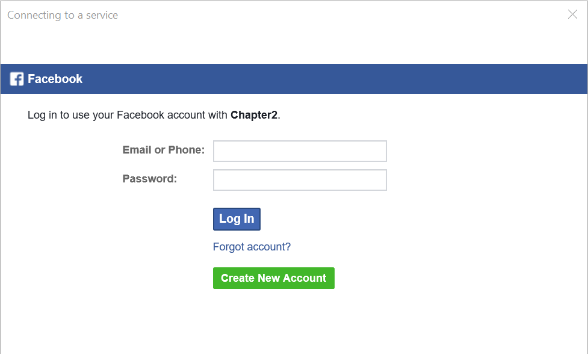

Social Authentication
Social Authentication¶
Azure App Service provides built-in support for Facebook and Google. Microsoft and Twitter are also accepted, but Microsoft authentication is handled within the context of Azure Active Directory (and is an option when creating the app registration), and Twitter uses the older (and insecure) OAuth v1 protocol. It should not be used.
Irrespective of whether you intend to use server-flow or client-flow, you will need to configure the Azure App Service Authentication / Authorization service. The method is pretty similar in each case:
- Obtain a Developer Account for the provider.
- Create a new application, obtaining a Client ID and Secret.
- Turn on Azure App Service Authentication.
- Enter the Client ID and Secret into the specific provider setup.
- Save the configuration.
Before you start any of this, create a new Azure Mobile Apps as we described in Chapter 1. If you want a site to deploy for the configuration, the Backend project in the Chapter2 solution is pre-configured for authorization. You just need to deploy it to Azure App Service.
Facebook Configuration¶
I am going to assume you have a Facebook account already. If you do not have a Facebook account, go to Facebook and sign up. All your friends are likely there already! Now log in to the Facebook Developers web site. Create a new Facebook application:

Note: Facebook updates the look and feel of their developer site on a regular basis. As a result, the screen shots I have provided here may be different. If in doubt, follow the bullet descriptions to find your way.
Info
If you are not already registered, Click the drop-down in the top-right corner and Register as a Developer before continuing.
- Click the My Apps link in the top right corner of the screen.
- Click Create a New App.
- Fill in the form:

-
If required, verify your account according to the instructions. This usually involves typing a CAPTCHA text, adding a credit card number and/or verifying your mobile phone number.
-
Click the Get Started button next to Facebook Login.
- Click Settings under Facebook Login in the left-hand menu.

- Enter your application URL +
/.auth/login/facebook/callbackin the Valid OAuth redirect URIs.

- Click Save Changes.
- Click the Settings (under Dashboard) in the left-hand menu.
- Click the Show button next to the App Secret
Now that you have the App ID and App Secret, you can continue configuration of your app within the Azure Portal.
- Open up your App Service by clicking on All Resources or App Services followed by the name of your app service.
- In the Settings blade, Click Authentication / Authorization which is under Features.
- Turn App Service Authentication to On.
- In the Action to take when request is not authenticated, select Allow Anonymous requests (no action).
Danger
It is very tempting to choose Log in with Facebook. However, you need to avoid this. Selecting this option will mean that all requests need to be authenticated and you will not get the information about the identity on the back end. Selecting Allow Anonymous requests means your app is in charge of what gets authenticated and what does not require authentication.
- Click Facebook (which should show Not Configured).
- Cut and Paste the App ID and App Secret into the boxes provided.
- Select public_profile and email for Scopes.
Warn
If you request anything but public_profile, user_friends, and email, your app will need further review by Facebook, which will take time. This process is not worth it for test apps like this one.
- Click OK (at the bottom of the blade) to close the Facebook configuration blade.
- Click Save (at the top of the blade) to save your Authentication changes.
You can test your authentication process by browsing to https://yoursite.azurewebsites.net/.auth/login/facebook; this is the same endpoint that the Azure Mobile Apps Client SDK calls when it is time to integrate authentication into the mobile client.

If you are not logged in to facebook already, you will be prompted for your facebook credentials first. Finally, here is your happy page - the page that signifies you have done everything right:

Warn
Every single OAuth provider will ask you what sort of information you want to have access to. These "claims" translate into permissions. The more permissions you request, the less likely the user is going to accept them. Be a good net citizen and only request the information you are actually going to use.
Google Configuration¶
It should be no shock that you need a Google Account to get started. If you do not have one already (or you want a different account for your development activities), create a new account now. Then log in to the Google Developer Portal. Click the Create Project link at the top:

Enter a nice name, then Click Create. The screen will show the progress and eventually the project will be listed in the All Projects list. It takes about 30 seconds to create a project. Once you have your Google project, the API Manager Library will show up. If Google decides to change the end place, Click the hamburger menu (in the top-left corner), select API Manager, followed by Library to see all the Google APIs you can enable:

There is no "Google Login" that can guide you here. The API you need to add is called Google+ and is listed under the Social APIs. Click Google+ API, then click Enable at the top of the screen.
Adding an API to a Google app doesn't mean it is ready to use. In our case, we need to configure the login process. Google has, of course, set this up so that it's easy to access a Google service, but difficult to use the authentication for other purposes. Configure Google login as follows:
- Click Credentials in the left-hand menu.
-
Select the OAuth consent screen tab:

Fill in the form and Click Save.
3. Create Credentials button. This pops up a drop-down menu. You want the OAuth Client ID.
-
Select Web application.

-
Enter the URL of your App Service in the Authorized JavaScript origins box. Ensure you use the https version of the URL.
- Enter
https://_yoursite_.azurewebsites.net/.auth/login/google/callbackin the Authorized redirect URIs box. - Click Create.
- Google will display your client ID and client secret.
You can also view the Client ID and Client Secret from the interface by clicking on the Credentials link on the left-hand menu.
The process from here is practically the same as Facebook. Open your App Service within the Azure Portal, Click All Settings, then Authentication / Authorization and finally Google (assuming you have already turned on the authentication service). Copy and paste the Client ID and Client Secret into the boxes provided. Click OK (at the bottom) followed by Save (at the top of the page).
Info
You can define multiple providers at the same time. The code in the client determines what authentication mechanism is used.
You can test this just like Facebook. Go to https://yoursite/.auth/login/google with your browser. You should see something like the following:

Confirming here should get us to the same happy screen we achieved with Facebook.
If you happen to mis-type the Authorized redirect URI, Google will inform you that the URI is wrong. I inevitably swap http for https. When this happens, it is an easy fix, but you have to wait a few minutes before the authentication system updates itself.
Warn
Google has changed the security semantics for its authentication service. You must use the v3.1.0 of the Azure Mobile Apps Client SDK for Server Flow authentication with Google to work.
Adding Authentication to a Mobile Client¶
Now that the backend is completely configured, we can move our attention to the mobile client. We are going to be using the same mobile client that we developed in the first chapter, but we are now going to add authentication to it. Web views are one of those items that are platform dependent. Fortunately for us, Xamarin has already thought of this and provided a facility for running platform specific code called the DependencyService.
Info
If you have already implemented authentication during the Enterprise Authentication section, this code is the same. You just have to alter the provider name.
If we run our application right now, clicking on the "Enter the App" button will result in an error. You will be
able to see the Unauthorized error in the debug window of Visual Studio. Our first step is to define an
Abstractions\ILoginProvider.cs interface within the shared project:
using Microsoft.WindowsAzure.MobileServices;
using System.Threading.Tasks;
namespace TaskList.Abstractions
{
public interface ILoginProvider
{
Task LoginAsync(MobileServiceClient client);
}
}
Next, we extend our Abstractions\ICloudService.cs interface so that the main application can call the login routine:
using System.Threading.Tasks;
namespace TaskList.Abstractions
{
public interface ICloudService
{
ICloudTable<T> GetTable<T>() where T : TableData;
Task LoginAsync();
}
}
Our code will call LoginAsync() in the ICloudService, which will get the platform-specific version of the
login provider and call LoginAsync() there, but with our defined mobile service client. That is defined in the
Services\AzureCloudService.cs class:
using System.Threading.Tasks;
using Microsoft.WindowsAzure.MobileServices;
using TaskList.Abstractions;
using TaskList.Helpers;
using Xamarin.Forms;
namespace TaskList.Services
{
public class AzureCloudService : ICloudService
{
MobileServiceClient client;
public AzureCloudService()
{
client = new MobileServiceClient(Locations.AppServiceUrl);
}
public ICloudTable<T> GetTable<T>() where T : TableData => new AzureCloudTable<T>(client);
public Task LoginAsync()
{
var loginProvider = DependencyService.Get<ILoginProvider>();
return loginProvider.LoginAsync(client);
}
}
}
The method looks up the platform dependent version of the login provider and executes the login method, passing along the client (which we will need later).
In each platform-specific project, we are going to define a concrete implementation of the login provider that uses
a web view to hold the actual authentication flow. Here is the droid Services\DroidLoginProvider.cs (in the
TaskList.Droid project):
using System.Threading.Tasks;
using Android.Content;
using Microsoft.WindowsAzure.MobileServices;
using TaskList.Abstractions;
using TaskList.Droid.Services;
[assembly: Xamarin.Forms.Dependency(typeof(DroidLoginProvider))]
namespace TaskList.Droid.Services
{
public class DroidLoginProvider : ILoginProvider
{
Context context;
public void Init(Context context)
{
this.context = context;
}
public async Task LoginAsync(MobileServiceClient client)
{
await client.LoginAsync(context, "facebook");
}
}
}
Tip
Replace "facebook" with "google", "microsoftaccount" or "twitter", depending on your identity provider.
Let us take a closer look at this implementation. The LoginAsync() method on the Azure Mobile Apps client object
takes the Android context (which is normally the main window) and a provider - we can pick any of "facebook",
"google", "microsoftaccount", "twitter" or "aad" depending on what we have defined in the Azure App Service. The
clever piece is the Xamarin.Forms.Dependency call at the top - that registers the class as a platform service
so we can access it through the Xamarin dependency service.
Note that we need an extra initialization routine for Android that must be called prior the login provider being
called to pass along the main window of the app (also known as the context). This is done in the MainActivity.cs
file after the Xamarin Forms initialization call. The dependency service is not set up until after the Xamarin
Forms library is initialized, so we will not be able to get the login provider reference before that point:
protected override void OnCreate(Bundle bundle)
{
base.OnCreate(bundle);
Microsoft.WindowsAzure.MobileServices.CurrentPlatform.Init();
global::Xamarin.Forms.Forms.Init(this, bundle);
((DroidLoginProvider)DependencyService.Get<ILoginProvider>()).Init(this);
LoadApplication(new App());
}
iOS is similar, but does not require the initialization step in the main startup class. The login provider class
is in Services\iOSLoginProvider.cs (in the TaskList.iOS project):
using System.Threading.Tasks;
using Microsoft.WindowsAzure.MobileServices;
using TaskList.Abstractions;
using TaskList.iOS.Services;
using UIKit;
[assembly: Xamarin.Forms.Dependency(typeof(iOSLoginProvider))]
namespace TaskList.iOS.Services
{
public class iOSLoginProvider : ILoginProvider
{
public async Task LoginAsync(MobileServiceClient client)
{
await client.LoginAsync(RootView, "facebook");
}
public UIViewController RootView => UIApplication.SharedApplication.KeyWindow.RootViewController;
}
}
Note that we are using the same pattern here for registering the concrete implementation with the dependency service,
so we can get it the same way. Finally, here is the UWP Services\UWPLoginProvider.cs (in the TaskList.UWP project):
using System.Threading.Tasks;
using Microsoft.WindowsAzure.MobileServices;
using TaskList.Abstractions;
using TaskList.UWP.Services;
[assembly: Xamarin.Forms.Dependency(typeof(UWPLoginProvider))]
namespace TaskList.UWP.Services
{
public class UWPLoginProvider : ILoginProvider
{
public async Task LoginAsync(MobileServiceClient client)
{
await client.LoginAsync("facebook");
}
}
}
Now that we have all the platform-specific login routines registered, we can move on to adding the login routine to
the UI. We have already got a button on the entry page to enter the app. It makes sense to wire up that button so
that it logs us in as well. The Command for the login button is in the ViewModels\EntryPageViewModel.cs:
async Task ExecuteLoginCommand()
{
if (IsBusy)
return;
IsBusy = true;
try
{
var cloudService = ServiceLocator.Instance.Resolve<ICloudService>();
await cloudService.LoginAsync();
Application.Current.MainPage = new NavigationPage(new Pages.TaskList());
}
catch (Exception ex)
{
Debug.WriteLine($"[ExecuteLoginCommand] Error = {ex.Message}");
}
finally
{
IsBusy = false;
}
}
Info
The ServiceLocator class is my basic singleton handler. It is available in the Chapter2 project. It
returns the concrete version of the cloud service, just like the Singleton version we defined in Chapter1.
When you run the application, clicking on the "Enter the App" button will now present you with an Authenticate window:

Going through the authentication process will get you to the task list again. If the authentication process fails,
then LoginAsync() will throw an error, which is caught at the ViewModel. Right now, the EntryPageViewModel
does nothing more than print a diagnostic message to the debug window of Visual Studio.
Integrating with multiple providers
Each provider has a slightly different server flow. In the [Chapter2] project, I use this to call the right provider endpoint. When the user clicks on the Facebook logo, for instance, it logs in with Facebook. It's up to you as to how this UI is presented.
Client-Flow for Social Providers¶
In each of the social providers, the identity provider SDK (provided by Facebook, Google, Microsoft or Twitter) will need to be integrated. In general, these SDKs are provided for a native platform (Objective-C or Swift for iOS, Java for Android), use callbacks or delegates (as is common practice in native libraries) and are thus more complicated to integrate with your mobile client than those that have a C#/.NET SDK delivered on NuGet.
Warn
Testing Client Flow for social providers requires that the social app be installed on the device. You cannot install other apps on the iOS simulator and there may be restrictions on the Android Emulator. This means that you generally need to test client flow for social providers on an actual device.
The reward for doing so are a more integrated experience on mobile devices. For example, if you integrate the Google Play Services SDK in an Android app, the app will seamlessly authenticate itself with the connected Google account in the background, avoiding the need for repeatedly authenticating the client. It may ask for a fingerprint instead if the app is not trusted. If you integrate the Facebook SDK, then the app will automatically switch to the Facebook app and ask you to approve the authentication request there instead of authenticating the user through a web view. Both of these provide a more integrated experience for the end user, so this work is well worth pursuing.
As an example, here is the client flow for Facebook. I've implemented this using the Xamarin.Facebook.iOS
library, which can be downloaded and installed into the iOS project from NuGet. The Services\iOSLoginProvider.cs contains the following:
#region Facebook Client Flow
private TaskCompletionSource<string> fbtcs;
public async Task<string> LoginFacebookAsync()
{
fbtcs = new TaskCompletionSource<string>();
var loginManager = new LoginManager();
loginManager.LogInWithReadPermissions(new[] { "public_profile" }, RootView, LoginTokenHandler);
return await fbtcs.Task;
}
private void LoginTokenHandler(LoginManagerLoginResult loginResult, NSError error)
{
if (loginResult.Token != null)
{
fbtcs.TrySetResult(loginResult.Token.TokenString);
}
else
{
fbtcs.TrySetException(new Exception("Facebook Client Flow Login Failed"));
}
}
#endregion
Note the use of a TaskCompletionSource<>() here. This is used often to convert callback APIs into awaitable APIs.
We set off the async call with the callback, then await on the completion (which is signified by the
TaskCompletionSource). When the callback is called, it sets the value of the TaskCompletionSource (or causes
an exception) and that causes the task to complete.
The LoginAsync() method can now be updated like this:
public async Task LoginAsync(MobileServiceClient client)
{
var accessToken = await LoginFacebookAsync();
var zumoPayload = new JObject()
{
["access_token"] = accessToken
};
await client.LoginAsync("facebook", zumoPayload);
}
public UIViewController RootView => UIApplication.SharedApplication.KeyWindow.RootViewController;
Finally, you need to configure your Facebook settings within the Info.plist file. Right-click the Info.plist file and select Open with.... Select the XML editor. Add the following to the file within the <dict> element (right before the closing </dict>):
<key>FacebookAppID</key>
<string>YOUR-APP-ID</string>
<key>LSApplicationQueriesSchemes</key>
<array>
<string>fbauth2</string>
</array>
<key>CFBundleURLTypes</key>
<array>
<dict>
<key>CFBundleURLSchemes</key>
<array>
<string>fbYOUR-APP-ID</string>
</array>
</dict>
</array>
Replace YOUR-APP-ID with the Facebook App ID from the Facebook developers console.
With this version, clicking on the login button will seamlessly switch into the Facebook application and ask the user to confirm the request, before switching back authenticated. Note that it's likely that the Facebook SDK will not work within a simulator as it requires the Facebook app to be installed.
There are a number of pre-built Xamarin libraries for handling provider authentication. For iOS, we have already shown Azure Active Directory and Facebook. Android has its own version of the Facebook SDK. Use the Google .NET API to access Google accounts. It's already cross-platform. In general, using the library from the provider itself is preferable to using one from a third party.